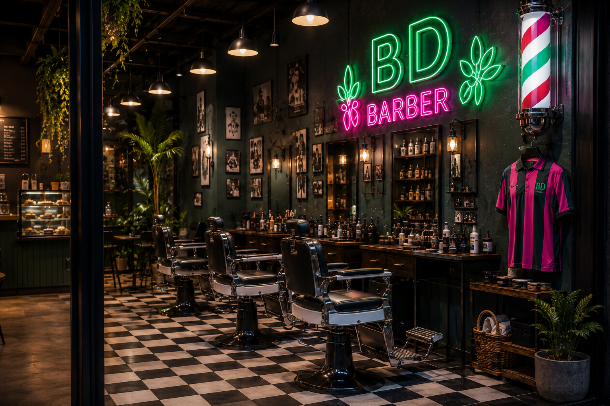

Cayo Perico
Tres marcas. Un mismo destino.
Tres marcas. Un mismo destino.
Club de Cultura Urbana
Cayo Perico nace de la unión de tres propuestas independientes que comparten una misma manera de entender el estilo y las personas. Cada detalle del lugar fue pensado para que una visita no termine cuando finaliza un servicio, sino que invite a quedarse, descubrir cada espacio y volver una y otra vez por la experiencia completa.
Seleccione una marca para obtener más información
